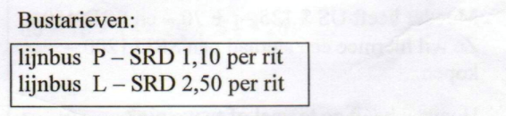
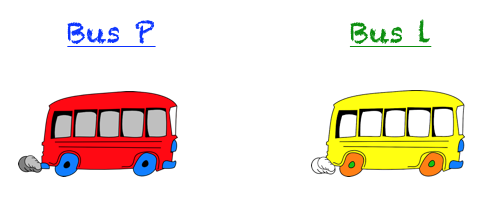
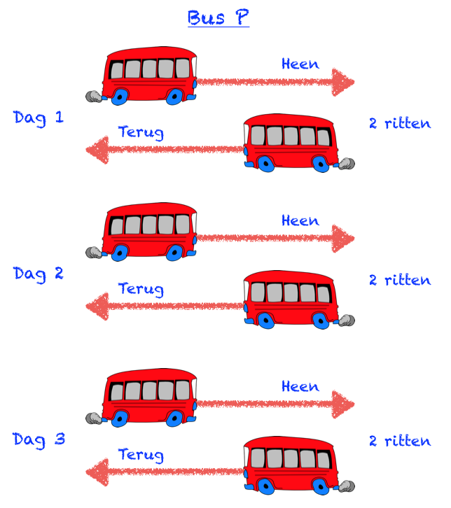
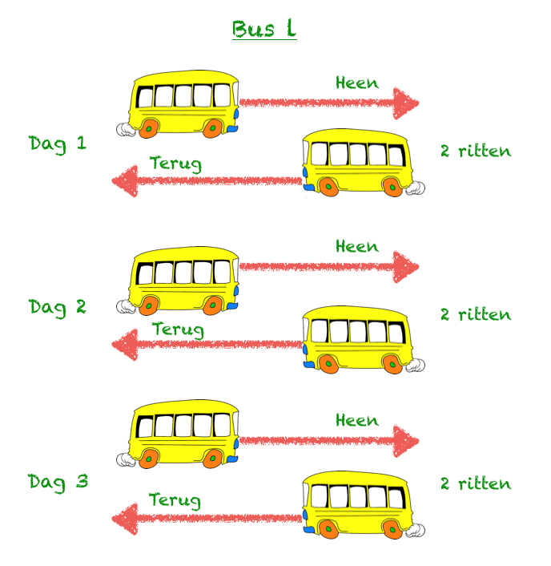

Vraag 1
Vraag

Prem maakt in één week 3 dagen gebruik van lijn P en 2 dagen van lijn L. Steeds heen en terug.
Hoeveel geld geeft hij totaal in 4 weken uit aan busgeld?
A: SRD 33,20
B: SRD 46,40
C: SRD 66,40
D: SRD 77,60
Achtergrond Informatie
Bij deze som worden wij gevraagd om het totaal bedrag dat Prem moet betalen te berekenen.
Zoals we zullen zien in the oplossing, hebben we hier te maken met het onderwerp vermenigvuldigen met hele en en met decimale getallen).
Het is erg belangrijk om bij deze som de gegeven informatie goed te lezen.
Oplossing
In de som wordt een heleboel informatie gegeven.
Daarom is het belangrijk om deze informatie goed te lezen en een plan te maken voordat je de som oplost.
We weten het volgende:
Prem gebruikt twee verschillende bussen: bus P en bus L.
Met deze bussen maakt hij ritten heen en weer.

Elk rit kost geld. Bus P kost SRD 1,10 per rit, terwijl 1 rit met Bus L SRD 2,50 kost.
De vraag is: hoeveel geld betaalt Prem totaal voor alle ritten in 4 weken?
We kunnen het antwoord als volgt berekenen voor bus P en bus L:
Aantal Ritten x Busgeld per Rit = Totaal Busgeld
Dus: we weten dat we het totaal aantal ritten van beide bussen moeten berekenen.
Stap 1: Tel alle ritten in één week op voor beide bussen
Elke dag dat Prem de bus gebruikt, reist hij heen én weer. Dus, in 1 dag, maakt Prem altijd 2 ritten.

In 1 week, gebruikt Prem bus P op 3 dagen.
Op iedere dag, maakt Prem 2 ritten.
Dus in 1 week, maakt Prem: 3 x 2 = 6 ritten met bus P.
Herhaal dezelfde berekening voor bus L:

In 1 week, gebruikt Prem bus L op 2 dagen.
Op iedere dag, maakt Prem 2 ritten.
Dus in 1 week, maakt Prem: 2 x 2 = 4 ritten met bus L.
Stap 2: Bereken het busgeld per week
Bus P:
In 1 week, maakt Prem 6 ritten met bus P.
1 rit met Bus P kost: SRD 1,10
Hij betaalt dus 6 keer SRD 1,10
In 1 week, betaalt Prem voor Bus P:
6 x SRD 1,10 = SRD 6,60
Bus L:
In 1 week, maakt Prem 4 ritten met bus L.
1 rit met Bus L kost: SRD 2,50.
Hij betaalt dus 4 keer SRD 2,50
In 1 week, betaalt Prem voor Bus L:
4 x SRD 2,50 = SRD 10,00
Prem betaalt totaal in 1 week:
SRD 6,60 + SRD 10,00 = SRD 16,60
Stap 3: Bereken het totale busgeld voor de 4 weken
Je weet nu dat Prem SRD 16,60 per week betaalt.
In 4 weken, betaalt hij: 4 maal zoveel, dus 4 x SRD 16,60
De berekening “4 x 16,60” kunnen we in twee stappen oplossen.
Eerst doen we 4 x 16, en daarna 4 x 0,60.
4 x SRD 16 = SRD 64
4 x SRD 0,60 = SRD 2,40
Vermenigvuldigen met decimale getallen
Decimale getallen vermenigvuldigen (zoals 4 x 0,60) is soms een beetje lastig.
Je kan van decimale getallen hele getallen maken door ze met 10 of 100 te vermenigvuldigen.
Bijvoorbeeld, eerst vermenigvuldigen we het decimale getal 0,60 met 10
0,60 x 10 = 6
De som wordt dan 4 x 6 = 24
Daarna moet je weer delen door 10
24 : 10 = 2,40
Dus: 4 x 0,60 = 2,40
In 4 weken, betaalt Prem dus in totaal 64,00 + 2,40 = 66,40.
Het juiste antwoord is C.